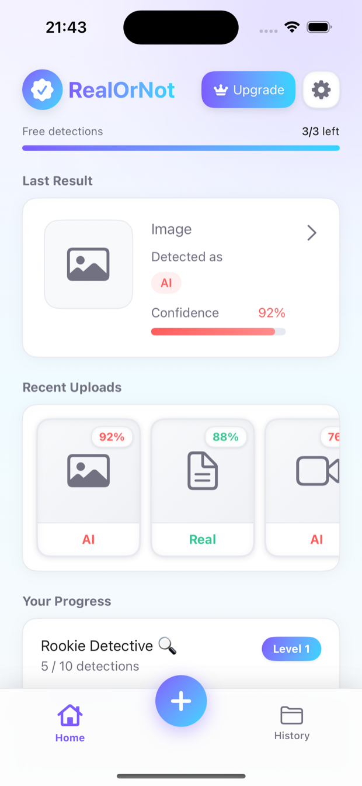
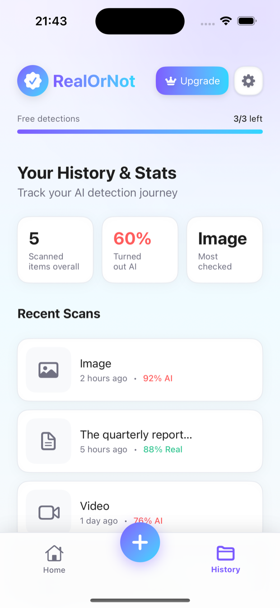
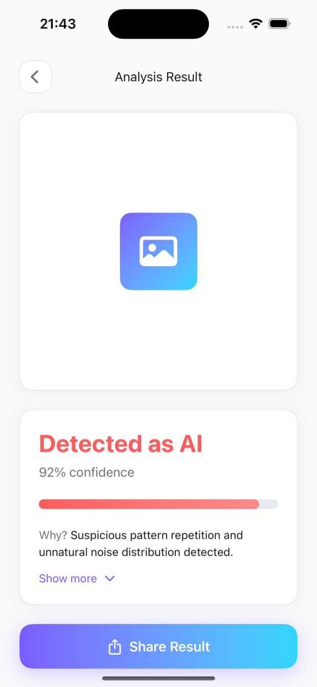

Submit an image, text, or video and get an instant AI-vs-Real verdict — with a confidence score and a clear checkpoint breakdown of why.
Download on the App Store
Viral posts, memes, reels, and messages — more of what you see is generated than you'd guess. RealorNot gives you a fast, honest read on whether a piece of content was made by a person or a machine, so you can decide what to trust.
Not just a score — a clear AI-vs-Real call, the confidence behind it, and the checkpoints that got there.
Upload an image, paste some text, or drop in a video, and RealorNot analyzes it in about three seconds. Image and text detection are free; video is a Pro feature.
Every scan is saved to your on-device history with running stats — how much you've checked, how often it turned out to be AI, and what you scan most. Level up your Detective rank as you go.

Every scan returns a clear AI-or-Real call and a confidence score, plus the checkpoints behind it — so you understand the reasoning, not just a number. Share any result in a tap.

Fast, clear, and private — built to give you a straight answer without keeping your files.
Photos, art, memes, and avatars — find out whether an image was generated or captured by a camera.
Reels, clips, and shorts. Upgrade to Pro to scan video and catch AI-generated footage.
Paste any passage and see whether it reads as human-written or machine-generated.
Every verdict comes with a confidence % and a breakdown of the checkpoints behind the call.
Scan history and stats feed a Detective progress system — level up the more you investigate.
Your media is analyzed to return a verdict, then discarded — never stored by us and never used for training.
Three taps from "hmm…" to a verdict.
Upload an image, paste text, or add a video you want to check.
RealorNot runs the content through its detection checkpoints in seconds.
See AI or Real, the confidence behind it, and the reasons why.
Start with 3 free scans — no account needed. Unlock unlimited scans and video with Pro.